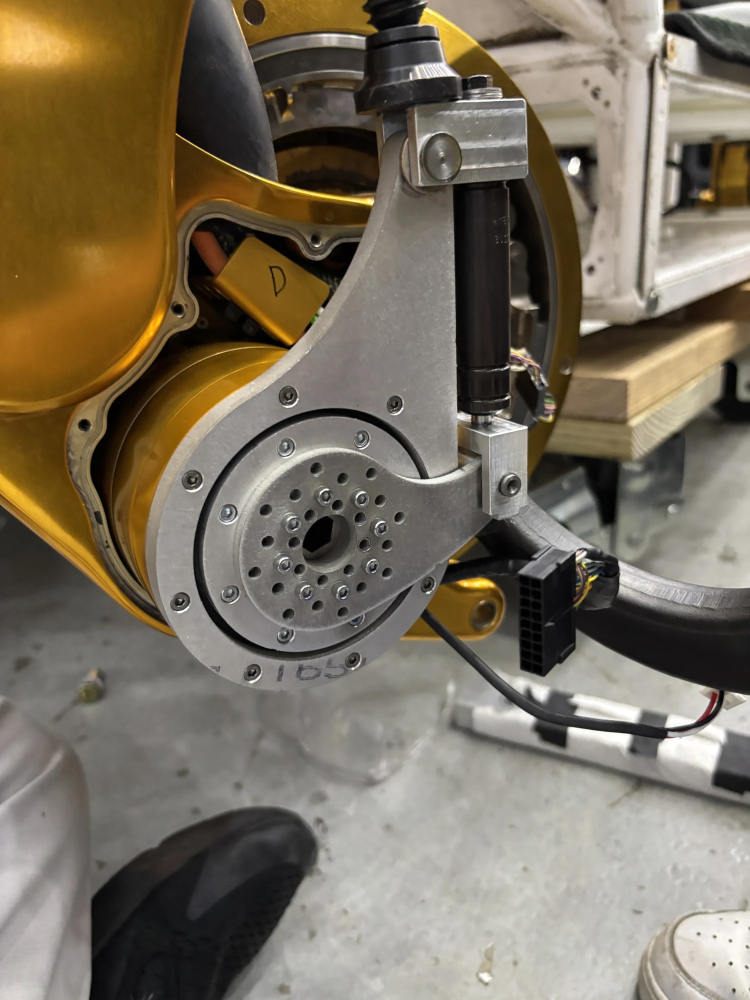
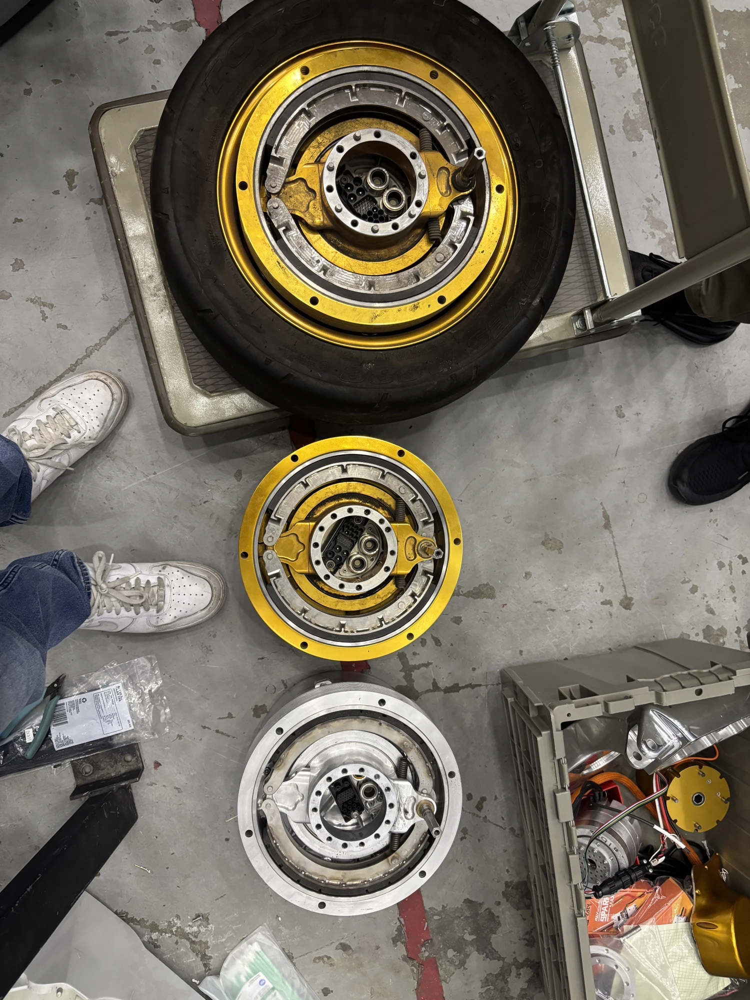

03 / NASA Johnson Space Center
A failsafe brake
for the MRV.
Developing a brake prototype for NASA’s Modular Robotic Vehicle, from mechanical design through manufacturing and validation.

01 / The project
From concept
to prototype.
I engineered a failsafe brake for NASA’s Modular Robotic Vehicle using a 220 lbf gas shock. My work covered design iteration, structural analysis, detailed drawings, and hands-on prototype manufacturing.
02 / Design & manufacturing
Closing the gap
between CAD and parts.
I modeled and iterated the assembly in SolidWorks, using FEA as part of evaluating the design’s load capacity and CAD to check packaging. I produced GD&T drawings for both outsourced and in-house manufacturing.
I then machined a prototype from the drawings using a manual lathe and milling machines equipped with digital readouts, meeting the ±0.002 in positional tolerance requirements.
{kind=link}
{kind=link}

03 / Outcome
A prototype that
moved the work forward.
Prototype validation supported the resumption of MRV rebuild efforts. The project connected the full mechanical development sequence: modeling a mechanism, communicating its geometry through drawings, machining parts, and validating the resulting hardware.
Next project